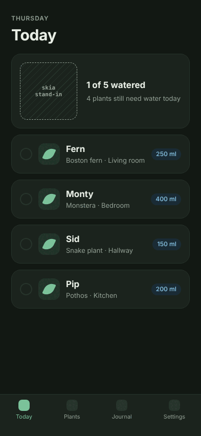

See your Expo app without a simulator. Know what is imitated.
Imitor builds your React Native app for the web, swaps native-only modules for stand-ins, and runs your flows in headless Chromium. Every shot comes with a ledger: what is your code, what is a stand-in, what it cannot show.
npm i -D github:joseamijares/imitor playwright
-
Your code
Header, copy and colours
Rendered from your own components and styles.
-
Stand-in
Watering ring
@shopify/react-native-skia→skia. The canvas keeps its box and draws nothing. -
Stand-in
Plant list data
expo-sqlite→sqljs. Real SQLite in wasm, in memory. -
Your code
Tab bar
Your navigator, as the web build lays it out.
-
Not shown
Native transitions, gestures and the keyboard
Not shown. Check these on a real phone.
-
Not shown
The phone's exact font rendering
Not shown. The web draws its own glyphs.
Built for the agent writing the change.
Connect Imitor as an MCP server and your coding agent can build the preview, run a flow, take a screenshot or record a video, then read what was stood in. A person reviews the result later.
 Claude Code
Claude Codeclaude mcp add imitor -- npx imitor mcpnpx imitor mcpcodex mcp add imitor -- npx imitor mcpimitor_describeLists the flows, devices and stand-ins configured, and whether a build existsnpx imitor describeimitor_buildBuilds the web preview of the app as it is on disknpx imitor buildimitor_screenshotTakes one screenshot by route, by flow, or with inline stepsnpx imitor screenshotimitor_run_flowRuns one flow and reports every step, its shots, and where it failednpx imitor flowimitor_record_videoRecords a .webm video of a flow with animations onnpx imitor recordimitor_read_problemsFailed steps, page errors, stand-ins seen and coverage limitsnpx imitor problemsimitor_open_previewServes the build and returns a URL a person can openRunning in four steps.
No Mac, no emulator, no device. It runs on any Linux box, CI runner or cloud agent session. Tested so far on one Expo SDK 54 app.
Install
From GitHub, with Chromium for Playwright.
npm i -D github:joseamijares/imitor playwright npx playwright install chromium
Wrap Metro
It does nothing unless Imitor runs the build.
module.exports = require("imitor/metro")
.withImitor(config);Describe flows
Stand-ins, devices, schemes and steps in imitor.config.json.
{ "tap": "Continue" },
{ "shot": "home" }Run
Screenshots, a manifest and the web build land in preview/.
npx imitor